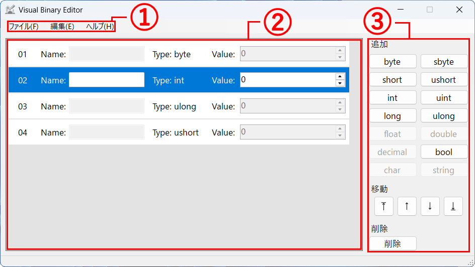
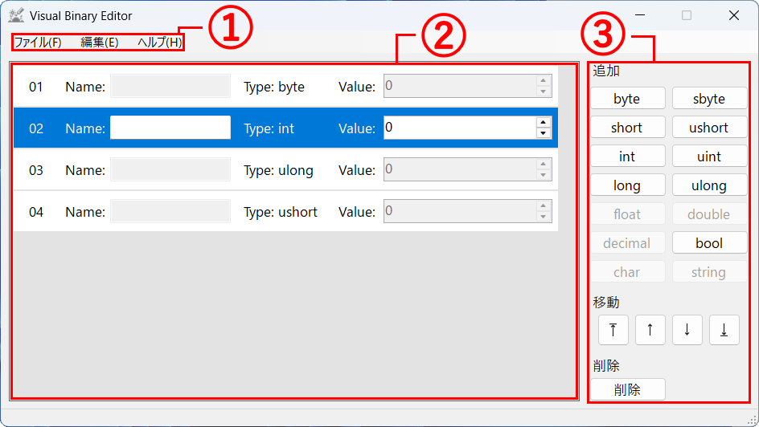

画面の見方

① メニューバー
各メニューから、バイナリファイルの操作、バイナリエントリの操作、ヘルプの表示などができます。
② バイナリオーダー
現在作成または編集しているバイナリの構成を表示します。
このソフトウェアでは、バイナリの構成をバイナリオーダーと表記し、バイナリオーダーの各要素をバイナリエントリと表記しています。
③ バイナリエントリの操作
バイナリエントリを追加、移動、削除するための操作盤です。 操作は選択中のバイナリエントリをもとに実行されます。

各メニューから、バイナリファイルの操作、バイナリエントリの操作、ヘルプの表示などができます。
現在作成または編集しているバイナリの構成を表示します。
このソフトウェアでは、バイナリの構成をバイナリオーダーと表記し、バイナリオーダーの各要素をバイナリエントリと表記しています。
バイナリエントリを追加、移動、削除するための操作盤です。 操作は選択中のバイナリエントリをもとに実行されます。